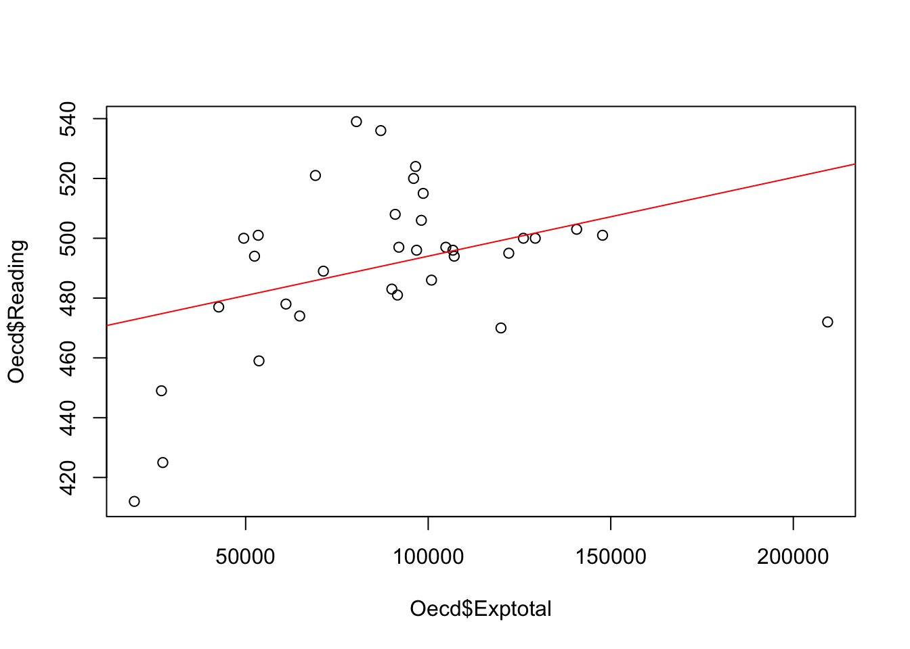

load("Oecd.RData")
source("OLP2 Functies.R")
library(car)ZSO 6
OPDRACHTEN
Vraag 1
Voor deze opdracht maken we gebruik van een databestand dat door ons werd samengesteld op basis van OESO-gegevens. Voor een reeks landen hebben we twee variabelen opgenomen: - Exptotal: dit is het gemiddeld bedrag dat aan een leerling besteed wordt door de overheid om een leerling van onderwijs te voorzien gedurende de gehele carrière van het plichtonderwijs, uitgedrukt in US Dollars. - Reading: de gemiddelde score voor een internationaal vergelijkbare leestoets afgenomen bij 14-jarigen.
Een wederkerende discussie die je hoort op allerlei beleidsniveaus aangaande onderwijskwaliteit is de vraag naar de rol van de “centen”. Zo zijn er mensen die beweren dat grote verschillen tussen landen in cognitieve outputmaten te verklaren zijn vanuit een verschillend budget dat overheden vrijmaken voor onderwijs.
1.1 Ga na of de hypothese klopt dat meer uitgaven aan onderwijs doorgaans leidt tot betere leerresultaten van leerlingen. Rapporteer zo volledig mogelijk.
1.2 Maak een grafiek met daarin de trend die je kan afleiden op basis van je analyses.
1.3 Allicht gaat het gevonden model niet op voor alle landen. Voor welk land is het gehanteerde model het minst geschikt?
1.4 De resulterende parameterschattingen zijn vrij klein. We gaan daar een oplossing voor uitwerken. Deel de variabele ‘Exptotal’ door 1000. Daarnaast centreer je de variabele ‘Reading’ rond z’n gemiddelde (=voor elk land het algemeen gemiddelde aftrekken). Schrijf je nieuwe variabelen weg in Oecd$Expend2 en Oecd$Read2. Doe nu dezelfde analyse opnieuw, maar maak gebruik van deze nieuwe variabelen.
Verandert je algemene conclusie?
Hoe kan je inhoudelijk het intercept en de hellingsgraad interpreteren?
[RESPONS ACHTERAAN DOCUMENT]
RESPONSEN
Vooraleer we de analyses kunnen uitvoeren moeten we uiteraard de data inladen in R en tevens de OLP2 Functies activeren. Dit doen we bijvoorbeeld door gebruk te maken van de commando’s load( ) en source( ).
1.1
- Analyses
We willen het effect nagaan van onderwijsuitgaven (‘Exptotal’) op de gemiddelde leesscore (‘Reading’). Het onderstaande commando geeft als resultaat een regressieanalyse van ‘Exptotal’ op ‘Reading’. Het resultaat wordt weggeschreven in het object met naam ‘Model1’. Via summary( ) roepen we vervolgens de concrete output op.
Model1 <- lm(Oecd$Reading ~ Oecd$Exptotal)
summary(Model1)
Call:
lm(formula = Oecd$Reading ~ Oecd$Exptotal)
Residuals:
Min 1Q Median 3Q Max
-60.811 -8.370 -1.325 15.393 50.153
Coefficients:
Estimate Std. Error t value Pr(>|t|)
(Intercept) 4.677e+02 1.106e+01 42.283 <2e-16 ***
Oecd$Exptotal 2.636e-04 1.143e-04 2.306 0.0277 *
---
Signif. codes: 0 '***' 0.001 '**' 0.01 '*' 0.05 '.' 0.1 ' ' 1
Residual standard error: 25.37 on 32 degrees of freedom
Multiple R-squared: 0.1425, Adjusted R-squared: 0.1157
F-statistic: 5.319 on 1 and 32 DF, p-value: 0.02772- Resultaten bespreken met verwijzing naar output
Uit \(R^2\) blijkt dat het gemiddeld bedrag dat aan leerlingen wordt uitgegeven (‘Exptotal’) 14,25% van de verschillen in leesscore (‘Reading’) verklaart. De gemiddelde uitgave per leerling heeft dus een groot effect op de leesvaardigheid. Bovendien geeft het resultaat van de F-toets aan dat we dit verband hoogst waarschijnlijk ook in de populatie van landen zullen terugvinden (F(1,32) = 5.319, p = 0.028). De kans dat er geen verschillen in leesscore zijn naar gemiddeld gespendeerd budget per leerling is duidelijk lager dan 0.05. ‘Exptotal’ zal dus ook in de populatie van landen verschillen in leesprestaties (‘Reading’) verklaren. De hellingsgraad (\(\beta_1\) = 0.000263, p = 0.028) geeft aan dat het om een positief verband gaat. Per US Dollar dat een land meer spendeert aan de studieloopbaan van een leerling, stijgt de gemiddelde leesscore met 0.00026 eenheden. Het intercept bedraagt 467.7 (p < 0.001). Dus, voor landen die hypothetisch gezien niets zouden spenderen aan onderwijs van leerlingen, zou de gemiddelde leerling een leesscore behalen van 467.7.
1.2
Om een grafiek te maken, maken we gebruik van de volgende commando’s (we hebben ervoor gekozen om de regressielijn in rood te tekenen):
plot(Oecd$Reading ~ Oecd$Exptotal)
abline(reg=Model1, col="red")
1.3
- Analyses
De vraag naar voor welk land deze regressievergelijking het minst goed past, is eigenlijk de vraag naar welk land (welk punt) het verst afligt van de regressielijn in de bovenstaande plot. Om daar een antwoord op te formuleren kunnen we de voorspelde leesscore voor elk land vergelijken met de waargenomen leesscore. We doen dit stapje voor stapje in R:
# STAP1: Voorspelde leesscores berekenen
# (op basis van de coefficienten die we halen uit de regressieanalyse)
Oecd$Voorspeld <- 4.677e+02 + 2.636e-04 * Oecd$Exptotal
# voorspelde leesscore = intercept + hellingsgraad*waargenomen leesscore
Oecd Cntry Exptotal Reading Labels Voorspeld
1 Australia 98630.39 515 Au 493.6990
2 Austria 119925.44 470 Oost 499.3123
3 Belgium 98128.00 506 Bel 493.5665
4 Canada 96541.43 524 Can 493.1483
5 Chile 26942.89 449 Chil 474.8021
6 Czech Republic 61044.58 478 Tsj 483.7914
7 Denmark 122070.41 495 Den 499.8778
8 Finland 87013.15 536 Fin 490.6367
9 France 96822.80 496 Fr 493.2225
10 Germany 91966.32 497 Dui 491.9423
11 Hungary 52432.61 494 Hon 481.5212
12 Iceland 126075.94 500 Ijs 500.9336
13 Ireland 106762.91 496 Ier 495.8427
14 Italy 100902.70 486 Ita 494.2980
15 Japan 95998.90 520 Jap 493.0053
16 Korea 80344.73 539 Kor 488.8789
17 Luxembourg 209406.65 472 Lux 522.8996
18 Mexico 27314.38 425 Mex 474.9001
19 Netherlands 90964.06 508 Ndl 491.6781
20 New Zealand 69117.81 521 Nwz 485.9195
21 Norway 140659.92 503 Nor 504.7780
22 Poland 49479.26 500 Pol 480.7427
23 Portugal 71289.16 489 Por 486.4918
24 Slovak Republic 42626.15 477 Slov 478.9363
25 Spain 91578.95 481 Spa 491.8402
26 Sweden 104826.34 497 Zwe 495.3322
27 Switzerland 147756.32 501 Zwi 506.6486
28 United Kingdom 107128.52 494 Uk 495.9391
29 United States 129326.96 500 Usa 501.7906
30 Brazil 19515.95 412 Bra 472.8444
31 Estonia 53447.55 501 Est 481.7888
32 Israel 64802.75 474 Isr 484.7820
33 Russian Federation 53657.54 459 Rus 481.8441
34 Slovenia 90042.47 483 Slov 491.4352# STAP 2: De predictiefouten per land berekenen en tonen
Oecd$Predictiefout <- Oecd$Reading - Oecd$Voorspeld
# predictiefout = waargenomen leesscore – voorspelde leesscore
Oecd Cntry Exptotal Reading Labels Voorspeld Predictiefout
1 Australia 98630.39 515 Au 493.6990 21.3010294
2 Austria 119925.44 470 Oost 499.3123 -29.3123470
3 Belgium 98128.00 506 Bel 493.5665 12.4334601
4 Canada 96541.43 524 Can 493.1483 30.8516802
5 Chile 26942.89 449 Chil 474.8021 -25.8021448
6 Czech Republic 61044.58 478 Tsj 483.7914 -5.7913511
7 Denmark 122070.41 495 Den 499.8778 -4.8777588
8 Finland 87013.15 536 Fin 490.6367 45.3633329
9 France 96822.80 496 Fr 493.2225 2.7775092
10 Germany 91966.32 497 Dui 491.9423 5.0576769
11 Hungary 52432.61 494 Hon 481.5212 12.4787644
12 Iceland 126075.94 500 Ijs 500.9336 -0.9336169
13 Ireland 106762.91 496 Ier 495.8427 0.1572961
14 Italy 100902.70 486 Ita 494.2980 -8.2979523
15 Japan 95998.90 520 Jap 493.0053 26.9946903
16 Korea 80344.73 539 Kor 488.8789 50.1211281
17 Luxembourg 209406.65 472 Lux 522.8996 -50.8995922
18 Mexico 27314.38 425 Mex 474.9001 -49.9000710
19 Netherlands 90964.06 508 Ndl 491.6781 16.3218731
20 New Zealand 69117.81 521 Nwz 485.9195 35.0805444
21 Norway 140659.92 503 Nor 504.7780 -1.7779551
22 Poland 49479.26 500 Pol 480.7427 19.2572675
23 Portugal 71289.16 489 Por 486.4918 2.5081767
24 Slovak Republic 42626.15 477 Slov 478.9363 -1.9362529
25 Spain 91578.95 481 Spa 491.8402 -10.8402115
26 Sweden 104826.34 497 Zwe 495.3322 1.6677756
27 Switzerland 147756.32 501 Zwi 506.6486 -5.6485662
28 United Kingdom 107128.52 494 Uk 495.9391 -1.9390779
29 United States 129326.96 500 Usa 501.7906 -1.7905865
30 Brazil 19515.95 412 Bra 472.8444 -60.8444056
31 Estonia 53447.55 501 Est 481.7888 19.2112253
32 Israel 64802.75 474 Isr 484.7820 -10.7820044
33 Russian Federation 53657.54 459 Rus 481.8441 -22.8441270
34 Slovenia 90042.47 483 Slov 491.4352 -8.4351939- Resultaten bespreken met verwijzing naar output
De bovenstaande output toont dat de voorspelde score voor Brazilië het verste af ligt van de werkelijke leesscore voor dat land. Het verschil bedraagt 60.84 punten. Dus, de gemiddelde Braziliaanse leerlingen doen het opvallend minder goed voor lezen dan wat zou verwacht mogen worden op basis van het budget dat besteed wordt aan onderwijs.
1.4
- Analyses
Oecd$Expend2 <- Oecd$Exptotal/1000
Oecd$Read2 <- Oecd$Reading - mean(Oecd$Reading)
Model2 <- lm(Oecd$Read2 ~ Oecd$Expend2)
summary(Model2)
Call:
lm(formula = Oecd$Read2 ~ Oecd$Expend2)
Residuals:
Min 1Q Median 3Q Max
-60.811 -8.370 -1.325 15.393 50.153
Coefficients:
Estimate Std. Error t value Pr(>|t|)
(Intercept) -23.4513 11.0604 -2.120 0.0418 *
Oecd$Expend2 0.2636 0.1143 2.306 0.0277 *
---
Signif. codes: 0 '***' 0.001 '**' 0.01 '*' 0.05 '.' 0.1 ' ' 1
Residual standard error: 25.37 on 32 degrees of freedom
Multiple R-squared: 0.1425, Adjusted R-squared: 0.1157
F-statistic: 5.319 on 1 and 32 DF, p-value: 0.02772- Resultaten bespreken met verwijzing naar output
De algemene conclusie is net hetzelfde als in de oorspronkelijke analyse. Je zou net zo goed concluderen dat uitgaven een grote invloed hebben op leesprestaties. Dit kan je afleiden uit de \(R^2\) van 0.143 en de p-waarde lager dan 0.05 (F(1,32) = 5.319, p = 0.028). Het intercept bedraagt nu echter -23.451 (p = 0.042). Dit is een gevolg van het centreren van de afhankelijke variabele ‘Reading’. Dit betekent dat een score van 0 op ‘Read2’ hetzelfde betekent als als land gemiddeld scoren voor lezen. Het intercept bedraagt -23.451, een land dat nul scoort op ‘Expend2’, dat geen geld uitgeeft aan onderwijs, scoort 23.451 punten lager dan het gemiddelde voor lezen. Het intercept wijkt nog steeds statistische significant af van 0. De hellingsgraad bedraagt 0.264 (p = 0.028). Dus, per 1000 USD dat een land meer uitgeeft per kind aan onderwijs stijgt de gemiddelde leesscore voor dat land met 0.264 punten. Want 1 eenheid stijgen op de variabele ‘Expend2’ staat nu gelijk aan 1000 USD meer uitgeven. Dit effect vinden we vermoedelijk ook de in de populatie terug aangezien de kans dat er in de populatie geen effect van ‘Expend2’ is, slechts 0.028 bedraagt.